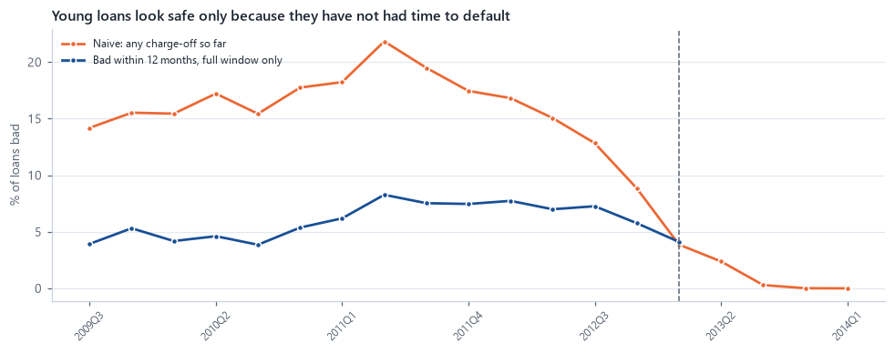
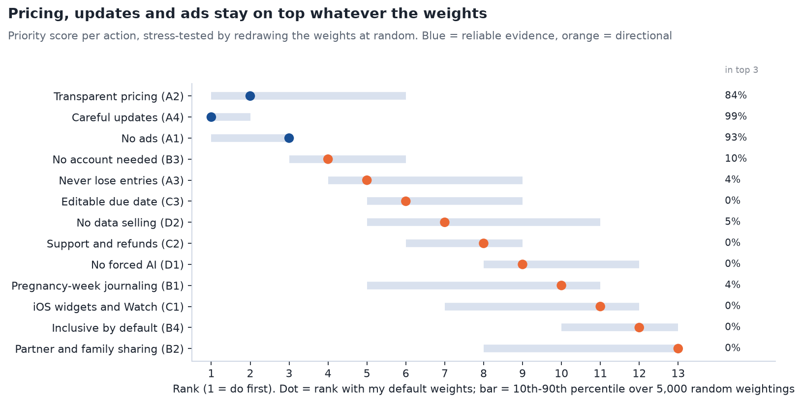
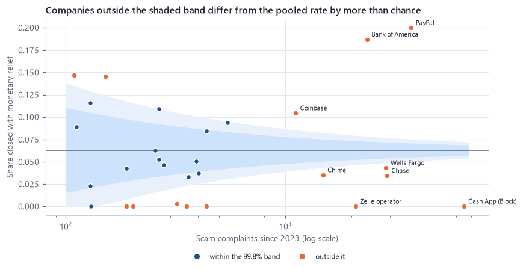

Consumer behavior
Why customers leave, complain, respond to a campaign, or lose money to a scam. I read behavior from reviews, complaints, experiments and transactions.
See: Wombloom, bank app reviews, Olist, email test, Cookie Cats
Data analyst · consumer behavior · analytics · visualization
I don't wait for a clean dataset. When the data a question needs doesn't exist, I collect it (app reviews, map data, numbers locked in government PDFs) and test it before I trust it. Each case study below starts with the problem, ends with a decision, and says what I got wrong along the way.
Three threads that run through the work, and where to see them.
Why customers leave, complain, respond to a campaign, or lose money to a scam. I read behavior from reviews, complaints, experiments and transactions.
See: Wombloom, bank app reviews, Olist, email test, Cookie Cats
A finding isn't finished until it has a price, a threshold or a recommendation, plus the assumptions it depends on.
See: loan cut-off, email profit, friction break-even, café location
Charts that state their takeaway, show uncertainty, and use a palette I tested for color-blind readers.
See: how I design charts
For each one: the problem, how the data was built, what I found, and the thing a quicker analysis would have missed.
No ready-made dataset existed for these questions, so I built one, then checked it before trusting it.
The problemI designed Wombloom, a private pregnancy journal for iPhone. Before deciding what to build first, I wanted evidence beyond my own experience: what do parents praise and complain about in the apps they already use?
The data7,955 App Store reviews of 10 competing apps, collected through Apple's public feeds with a documented method for choosing competitors. Reviewer names and IDs were never stored.
What I caughtAn off-the-shelf sentiment model called only 44% of 1 and 2 star reviews negative, so I built topic rules and tested them on held-out reviews. Only 7 of 19 topics passed, and only those count as measurements.
The problemBank apps collect thousands of reviews. A digital product team needs to know which problems actually cost ratings, and whether fintech users complain about different things than bank customers.
The data8,350 recent reviews of 17 bank, card and fintech apps that I collected from Apple's public review feed. The complaint narratives I first planned to use turned out to be unavailable, so I changed the source, not the question.
What I caughtAverage rating measured how often each app prompts happy users, not its quality (0.99 correlation with its five-star share), so I compared only unhappy reviews.
The problemA café brand wants to know which district has the most unmet demand at a sensible rent. No dataset answers that.
The dataI built one: 15,484 points of interest from OpenStreetMap, land prices scraped from a property listings site, and population from a pinned Wikipedia revision. Hanoi abolished its districts in July 2025, so I queried the historical map.
What I caughtOpenStreetMap appears to miss small independent cafés outside the centre, so every supply gap is re-estimated on chain cafés only.
The problemEvery check a bank adds to a payment annoys honest customers. A fraud team needs to know where friction prevents enough losses to be worth it.
The dataThe Federal Trade Commission publishes its fraud figures only as PDF reports, so I extracted six years of tables (2019 to 2024) and combined them with 31,959 scam complaints filed with the CFPB and Census population data.
What I caughtMy first trend chart put two measures on two y-axes, which invents a relationship, so I split it into three small charts.

The problemA retailer tested two emails on 64,000 customers. Marketing needs to know which to send, if either.

The problemA mobile game makes players wait or pay at a "gate". The team tested moving it from level 30 to level 40.

The problemOlist, a Brazilian marketplace, sees few repeat buyers. Is late delivery the reason, and what should it fix first?

The problemA bad loan loses far more than a good loan earns, so the approval cut-off is a cost decision, not an accuracy contest.

The problemA complaint team can review only a handful of issues a week. Which surges deserve it, and can the alert rule be trusted?
A chart is an argument. These are the rules I hold mine to, with examples from the case studies.



I write predictions down before analyzing, then score them. These are the misses, what the data showed instead, and what I changed because of it.
I expectedThe lending platform's own score to be about as good as anything I built.
The data showedMy scorecard ranked risk better, by 0.064 AUC.
What I took from itAn existing model is a benchmark to test, not a ceiling to assume.
I expectedCustomer service to be the theme that costs the most stars.
The data showedIt ranked fifth. Frozen or closed accounts cost the most, though they are rarely mentioned.
What I took from itThe loudest complaint is not always the costliest; I now measure frequency and cost separately.
I expectedSimple keyword rules to label review topics accurately.
The data showedScored against a labeled validation sample, precision was as low as 0.47 for some topics.
What I took from itI rewrote the rules from the errors, then scored them once on a fresh sample before using them.
I expectedA robust alert rule to shrug off one huge spike.
The data showedIt was partly blinded for months, needing 3 to 5 times the new normal to alert.
What I took from itI built an alert-aware baseline that caps flagged weeks, and it held up.
I expectedAdjusting for customers' past spend to sharpen the estimates.
The data showedIt removed 0.04% of the noise, because past spend barely predicts a rare two-week purchase.
What I took from itA technique only helps when its assumption holds, so I check first and report it either way.
I expectedThe experiment's random split to be clean.
The data showedIt failed its sample-ratio check: 789 more players in one group.
What I took from itCheck the experiment before reading its result, and test whether the conclusion survives the worst case.
What was hard across these projects, and how it changed the way I work.
ChallengeSelf-collected data has no documentation and no one else's checks. My first topic rules and an off-the-shelf sentiment model both looked fine until I checked them against star ratings and labeled validation samples.
LessonI validate every measuring tool on held-out data and keep only what passes, as with 7 of 19 Wombloom topics.
ChallengeThe traps were in how data arrived: 500 recent reviews covering 3 days for one app and 282 for another, loans too young to have defaulted, the newest complaints not yet published, same-day split baskets counted as loyal customers.
LessonBefore any analysis I ask how each row got into the data and what is missing because of it.
ChallengeComplaint narratives were unavailable, fraud data existed only as PDFs, and Hanoi's districts had been abolished while prices and population were still published by the old districts.
LessonI moved to app reviews, extracted the PDF tables, and queried the historical map, and I documented each workaround so it can be checked.
ChallengeBoth emails had statistically real effects, and a boosted credit model scored slightly higher than my scorecard. Each was tempting to recommend on that alone.
LessonI translate effects into money with the assumptions written down, and show how the answer moves when those assumptions change.
ChallengeI shipped a dual-axis chart, and I nearly ranked bank apps by average rating, which would have measured how often each app asks happy users to rate, not its quality.
LessonI review every chart against a checklist and ask what a skeptical reader would wrongly conclude from it.
ChallengeIn Wombloom, the priority model ranked my own favourite idea low.
LessonI didn't tune the model until it agreed. I kept the disagreement in the write-up and added a second lens, because a reader should see the tension too.
Public APIs and feeds, polite web scraping, PDF table extraction, OpenStreetMap queries, privacy rules at ingestion.
Review mining, topic rules validated on held-out labels, retention and survival analysis, segmentation.
A/B tests, sample-ratio checks, bootstrap intervals, multiple-comparison control, power and peeking.
Logistic and count regression, scorecards, gradient boosting, calibration, break-even and sensitivity analysis.
matplotlib, Altair, Streamlit apps, color-blind-tested palettes.
Python (pandas, statsmodels, scikit-learn), SQL (DuckDB, SQLite), Jupyter, Git.